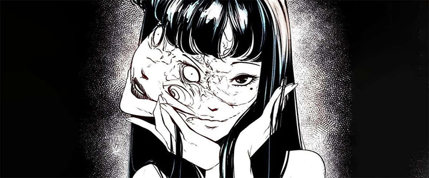

Tomie
Resumo
Em uma sala de aula do ensino médio, estudantes lamentam a perda de um deles: Kawakami Tomie, que foi assassinada e desmembrada. Chocados com a sua morte, a turma fica intrigada com o cruel destino que caiu sobre alguém tão querido por eles; uma garota tão linda e radiante não merecia uma morte tão cruel. No entanto, uma aluna bem familiar aparece de repente na sala de aula. Linda, esbelta e com uma marca abaixo do olho esquerdo, ela sorri e pede desculpas pelo atraso.
Esse é apenas o começo dos mistérios que cercam essa mulher. Os homens são atraídos completamente por sua beleza, mas também são levados por um impulso sombrio, com o desejo de desmembrá-la. Cada vez que esse desejo é consumado, Tomie retorna dos mortos para continuar seu hobbie favorito: brincar com os homens.